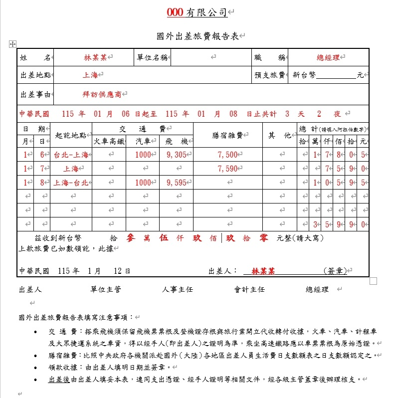
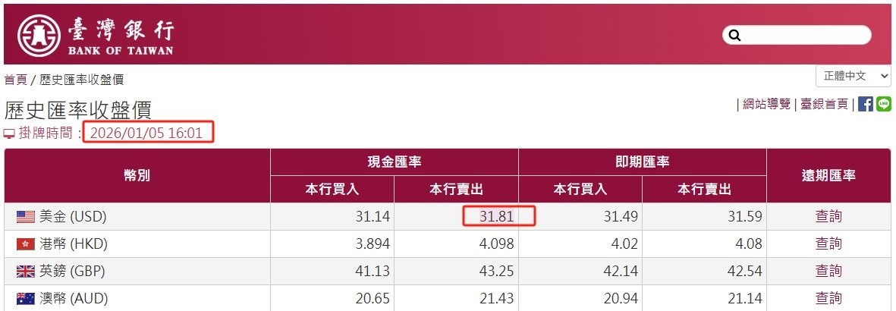
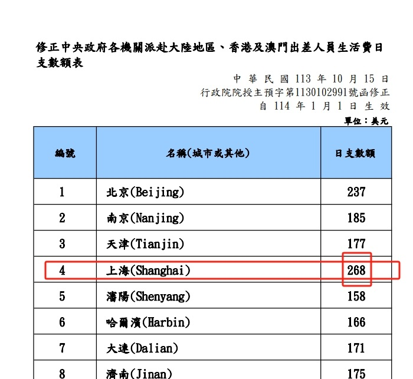
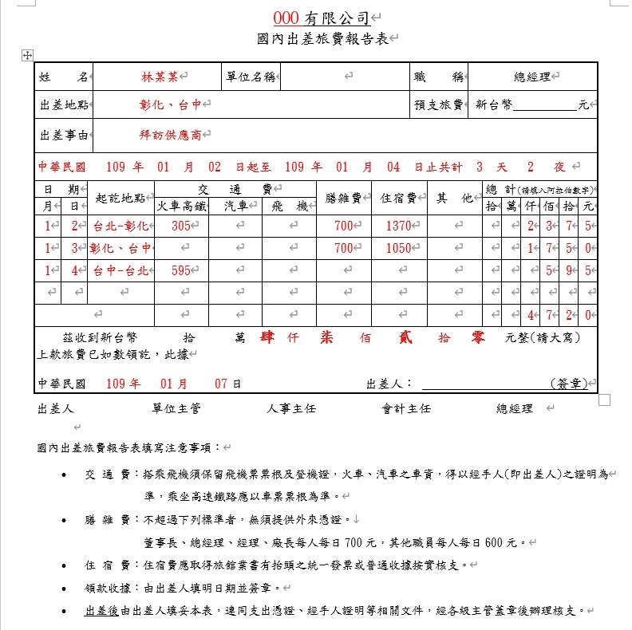

公司差旅費怎麼列報？國內、國外出差一次看懂
員工因公司業務需要出差，所產生的交通、住宿、餐費及其他必要支出，會成為公司的差旅費。
但實務上常遇到的問題是：
「員工出差，吃飯沒有發票，可以列公司費用嗎？」
「國外出差沒有台灣統一發票，怎麼報帳？」
這些問題不能只看「有沒有發票」，還要看出差是否確實因公、費用性質、公司內部制度及相關規定。
一、列報差旅費，首先要證明「真的有出差」，因此出差報告單是必要文件。
公司要列報差旅費，基本上應該能夠說明：
- 誰去出差？
- 申請人為員工、負責人等。
- 什麼時間出差？
- 日期區間。
- 去哪裡？
- 什麼縣市或國家。
- 出差原因為何？
- 簽約、考察、拜訪供應商、採購…等。
- 產生哪些費用？
- 交通費、膳宿雜費。
因此，除了發票、收據等外部憑證外，出差報告單也是很重要的內部管理文件。
公司可以依自身需求設計格式，但報告單表格欄位至少要能說明前述事項，如出差人、日期、地點、事由及費用明細等。
二、國外差旅該如何列報、注意事項及說明
國外出差旅費報告表-範例如下：

例如：
林某某於115年1月6日，至上海拜訪客戶，洽談年度採購合約，1月8日返台，期間搭乘飛機及計程車，另依公司規定支領膳宿雜費。
填寫及附件重點說明
- 紅字部分均應填寫：如出差人、日期、地點、事由及費用明細等。
- 申請人及主管應簽章。
- 應提示出入境證明：
- 機票及登機證
- 或護照出入境戳記戳章
- 或向移民署申請入出國證明
- 機票購買證明：
- 如：航空公司提供或系統列印單
- 或旅行社代收轉付收據
- 或其他證明文件
- 如有國內交通情況：應附上相關收據或車票
國外支付膳宿雜費說明
- 依據實際支付情況填寫國外出差旅費報告表並向公司申請。
- 國稅局依據國外出差日支數額表認定列報上限。
- 如果膳宿雜費申請金額小於等於日支數額：一律採用，且不需附上單據。
- 如果膳宿雜費申請金額大於日支數額：超額的部分，必需申報員工的薪資所得。
使用日支數額表的細節說明
- 算頭不算尾：返國的那一天不計入日支數額。
- 同一天跨城市者：依住宿城市為準。
- 匯率計算：出國前一天台灣銀行現金賣出匯率計算。
範例說明（包含計算說明）

台灣銀行匯率-現金賣出-2026/1/5-範例-示意圖

日支數額表-上海-範例-示意圖
- 匯率計算：出差日為 115/1/6 。依前一日（115/1/5）台灣銀行現金賣出匯率 31.81 計算。
- 出差地點：為上海。依據日支數額表每日日支數額為268元（美元）。
- 日支數額限額： 268美元*匯率31.81=單日上限8525元。
- 結論：本案並未超限，一律採用，且不需附上單據。
三、國內差旅該如何列報、注意事項及說明
國內出差旅費報告表-範例如下：

例如：
林某某於109年1月2日起到4日止，至彰化、台中拜訪供應商客戶，洽談年度採購合約，期間搭乘火車等交通工具並住宿，依公司規定申請差旅費。
填寫及附件重點說明
- 紅字部分均應填寫：如出差人、日期、地點、事由及費用明細等。
- 申請人及主管應簽章。
- 應提示證明文件：
- 交通費：如飛機、高鐵、火車、計程車收據車票等。
- 住宿費：旅館等業者提供載有公司統編的發票或收據。
- 膳雜費：如果沒有超過下列標準，無須提供外來憑證。
- 董事長、總經理、經理、廠長：每日 700 元。
- 其他職員：每日 600 元。
四、常見的差旅費問題或情況
情境：國內出差只提供住宿費發票，但未提供出差旅費報告表
- 在稅法上無法單憑發票認列為公司的差旅費。
- 國稅局查核重點與風險
- 無法證明業務相關性：住宿發票只能證明確實有支付住宿費，但無法證明該支出是為了「公司業務」而產生。
- 稅法規定：差旅費支出應提示逐日前往地點、訪洽對象及內容的出差報告單及相關證明文件，否則不予認定。
- 面臨剔除補稅風險：若遭遇國稅局查帳，缺乏出差報告單與相關佐證（如會議記錄、電子郵件往來、拜訪照片等），該筆住宿費用會遭剔除，並可能導致補稅。
- 記帳士事務所建議
- 補填出差報告單：詳細記錄出差前往的地點、拜訪對象以及業務內容。
- 準備佐證資料：儘量附上能證明與營業活動有關的證明，例如line紀錄、email、開會通知或照片等。
情境：國外出差只提供旅行社代收轉付收據，但未提供出差旅費報告表等文件
- 僅憑旅行社代收轉付收據，無法完整完成國外差旅費報銷，也不符稅務規定，不能認列差旅費。
- 國稅局查核重點與風險
- 依據相關規定（如《國外出差旅費報支要點》及稅法規定），報支國外旅費通常需要完整且相對應的憑證與報告表。
- 無法證明業務相關性：只能證明確實有出國的支出，但無法證明該支出是為了「公司業務」而產生。
- 稅法規定：差旅費支出應提示逐日前往地點、訪洽對象及內容的出差報告單及相關證明文件，否則不予認定。
- 面臨剔除補稅風險：國稅局查帳時要求營利事業證明其支出為業務所需，若缺乏出差報告（證明業務目的）及相關行程證明，可能會面臨剔除補稅的風險。
- 記帳士事務所建議
- 補填出差報告單：詳細記錄出差前往的地點、拜訪對象以及業務內容。
- 附上支出憑證：代收轉付收據、國內交通費證明、出入境證明…等。
- 準備佐證資料：儘量附上能證明與營業活動有關的證明，例如line紀錄、email、開會通知或照片等。